What is Claude Code?
Claude Code is
an agentic coding tool by Anthropic. It is one of the most widely used
coding agent that runs on your computer and can run commands, read/write
files and integrates with your development environments. This guide will
help you install Claude Code on your system.
Sign-up for Claude
Visit Claude AI and sign-up for an
account. Using Claude Code requires a Claude Pro account or higher. We
recommend you purchase a monthly Claude Pro subscription - which is more
than enough to get started and learn agentic coding.
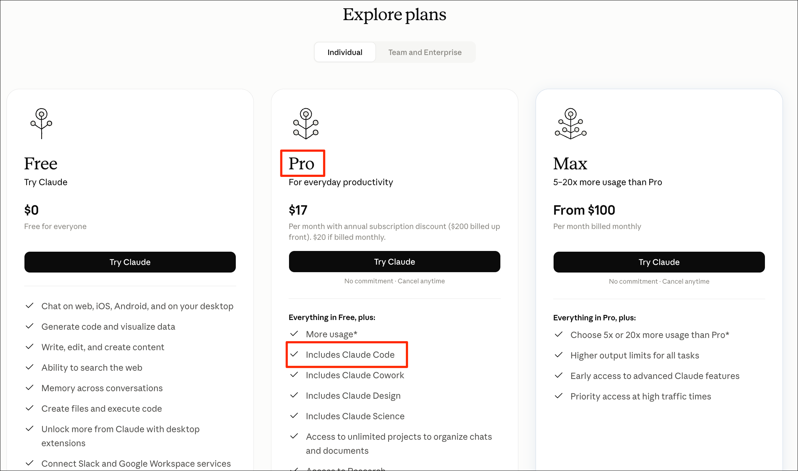
Install Claude Code
You can visit Claude Code Quickstart
Guide for platform-specific instructions. We have provided
simplified instructions for Windows and Mac below.
Install Claude Code on Windows
- From the Start Menu, search for Windows Powershell and launch it.
Paste the following command and press Enter. The installer will
run and install Claude Code.
irm https://claude.ai/install.ps1 | iex
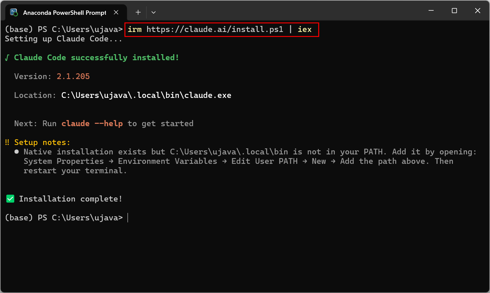
- Next, you need to update the system PATH variable so you can launch
Claude Code from the terminal. Press Windows Key + R, type
sysdm.cpl and press Enter. In the System
Properties dialog, go to Advanced, and click
Environment Variables.
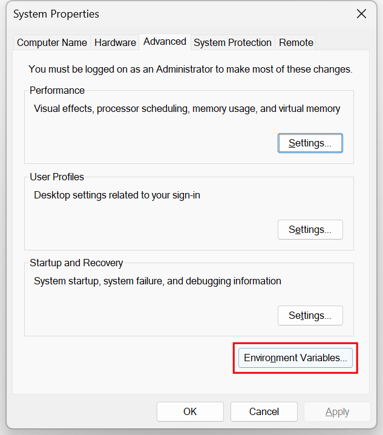
- Locate the Path variable and click
Edit….
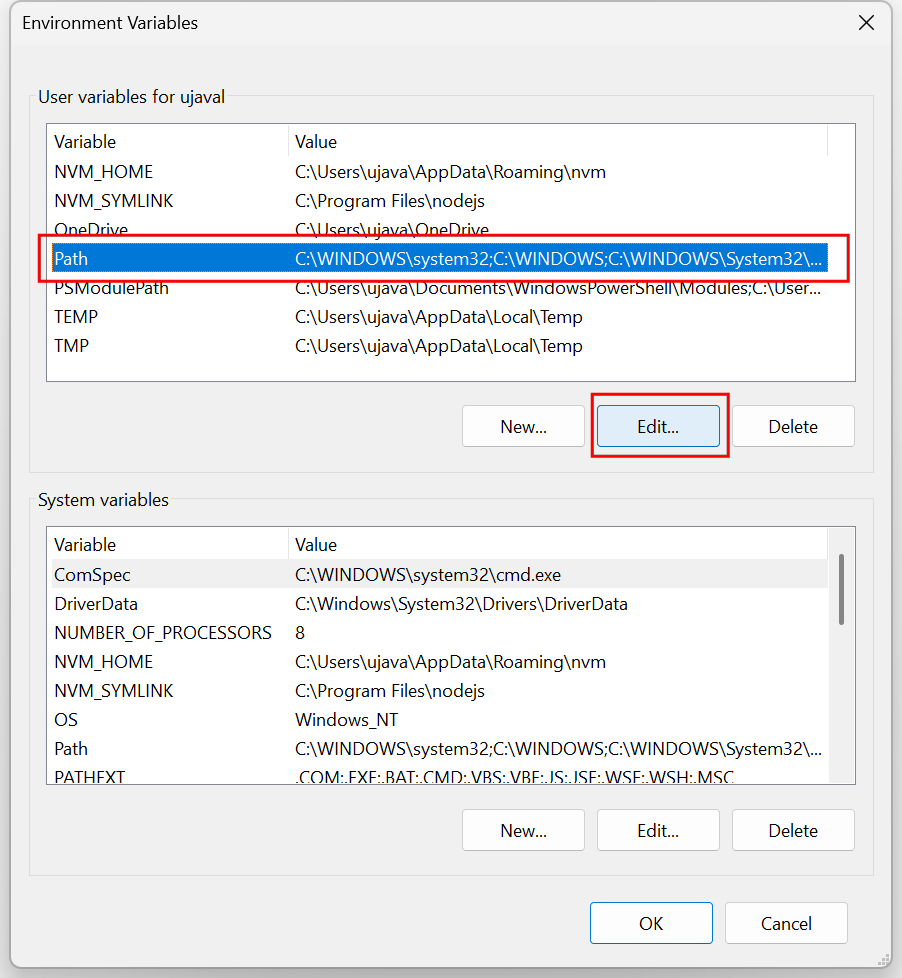
- Click New and enter the following path and click
OK
%USERPROFILE%\.local\bin
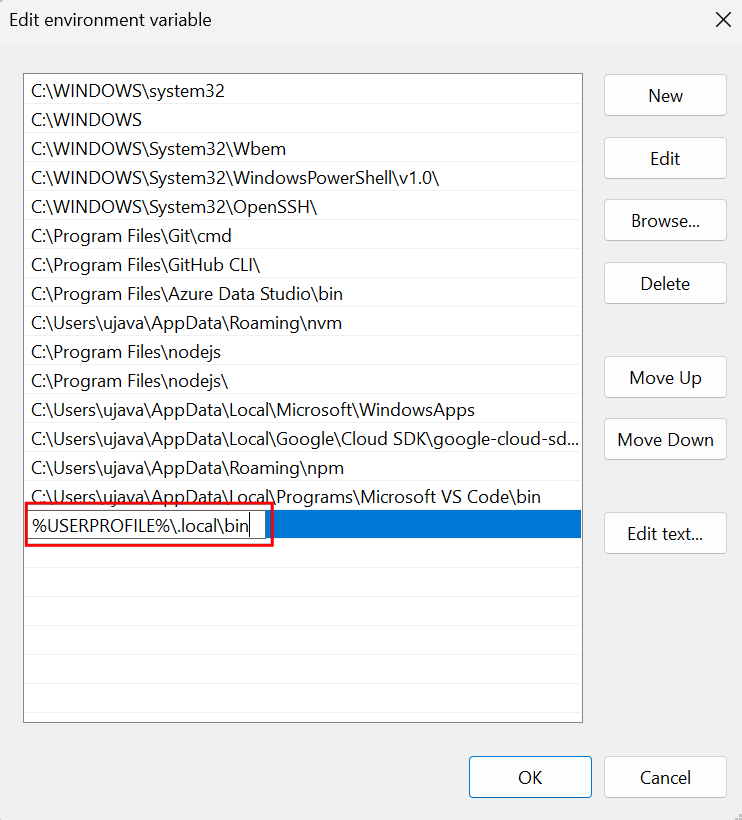
- Once you have updated the PATH variable, close and restart the
Powershell window. In the new Powershell window, type the following
command to launch Claude Code.
claude
If you get an error, ensure that you have restarted Powershell after
updating the Path.
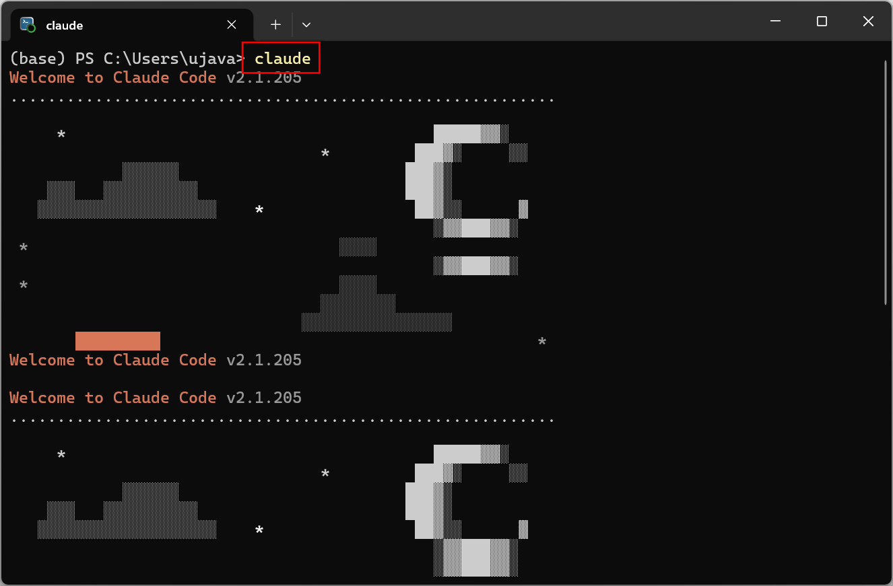
- The first time you launch Claude Code, you will be prompted to
choose a theme. Use your arrow keys to pick a theme and press
Enter.
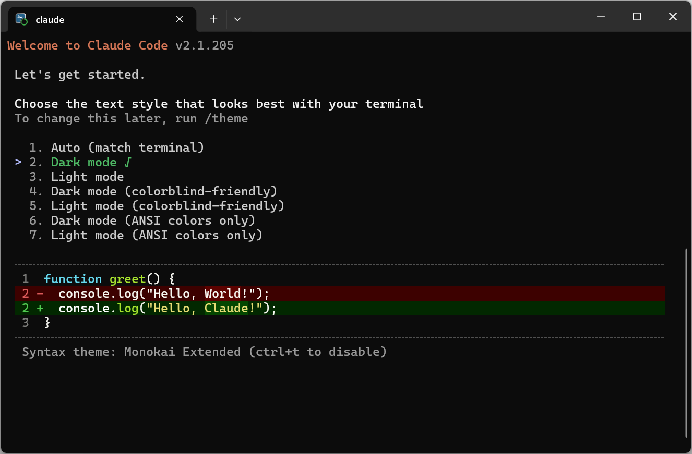
- Next, you will be prompted to login to your account. Choose
Claude account with subscription and press Enter.
Complete the login process through the browser.
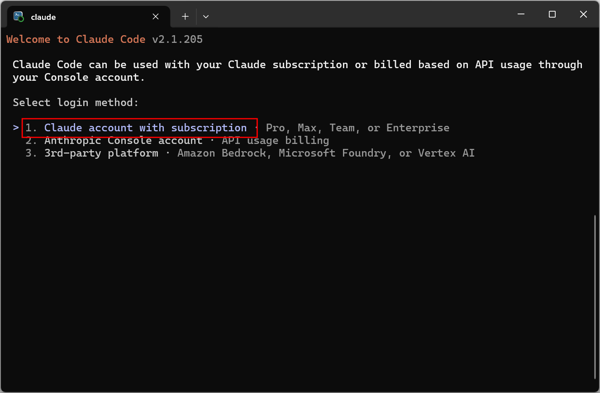
- After successful login, you will be presented with security
warnings. Press Enter.
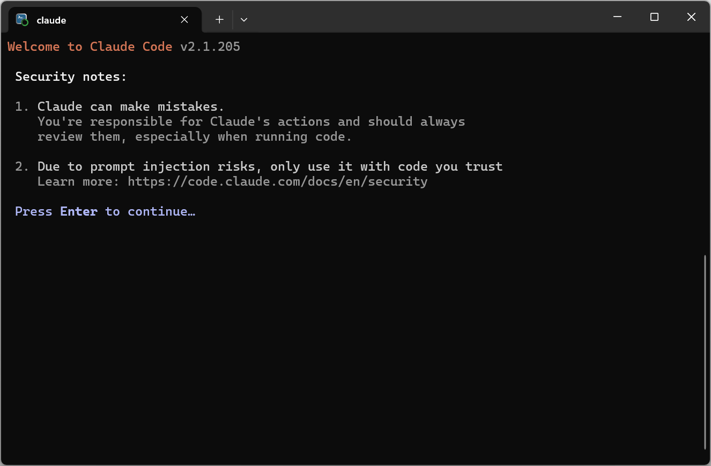
- Claude Code is meant to run from project folders. Since we ran the
command from your home diretory, you will be presented with another
secutiry warning. We will not be doing any work in this folder, so you
can safely select Yes, I trust this folder.
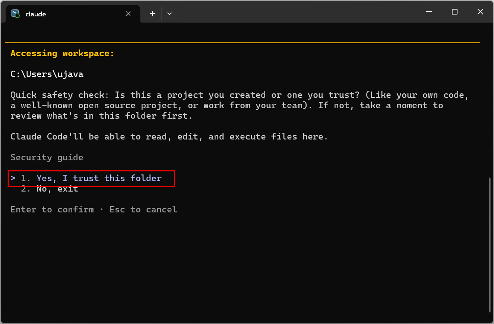
- If you are prompted to try the fullscreen renderer, you can select
Yes, try it.
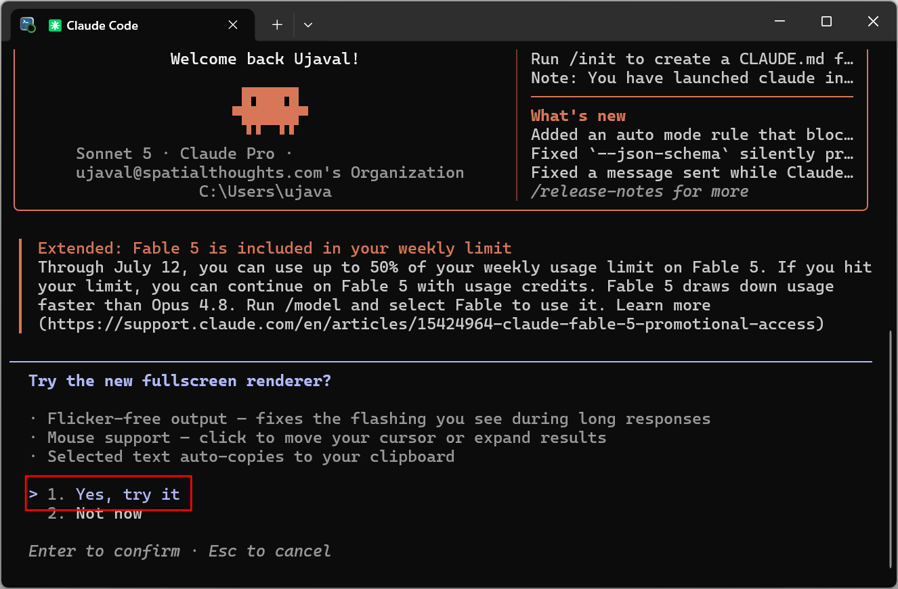
- Once the initialization is complete, you can enter a simple prompt
as below. If you get a response back without any errors, your setup is
now complete. You can press Ctrl + C to exit Claude Code and
close the Powershell window.
hello
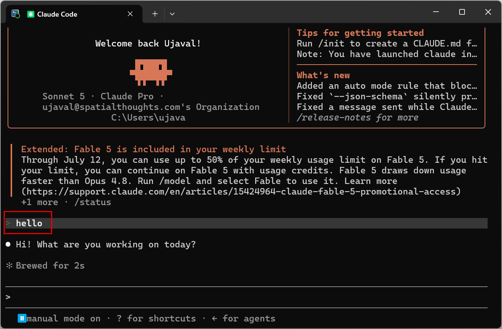
If you want to report any issues with this page, please comment below.